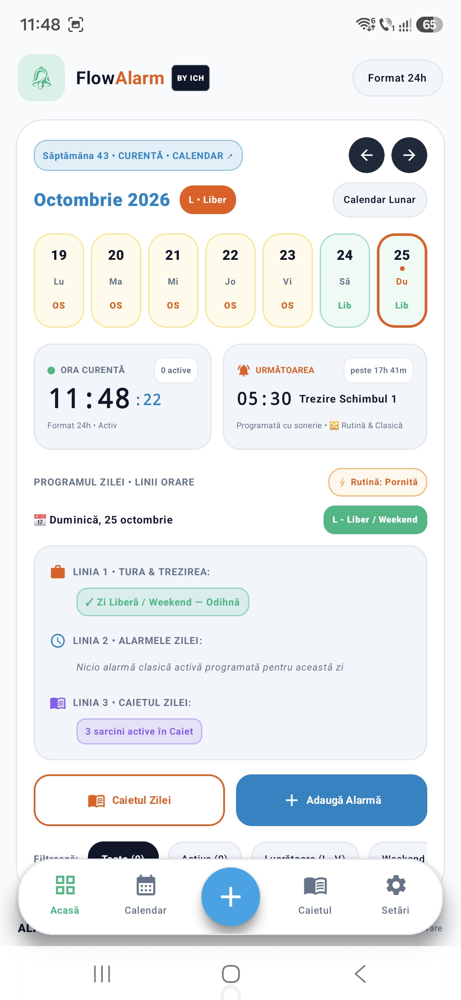

01 / APLICAȚIE ÎN DEZVOLTARE
FlowAlarm by ICH
O aplicație de organizare pentru ture și alarme, pornită din experiența mea. Configurezi programul o dată, iar FlowAlarm te ajută să-l urmărești și să observi suprapunerile.
Povestea FlowAlarm ↗